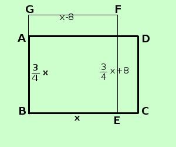

|
soluzione Risolvere il seguente problema Le dimensioni di un rettangolo sono l'una i 3/4 dell'altra; determinare i lati sapendo che se si aumenta un lato di 8 cm e si diminuisce l'altro di 8 cm l'area aumenta di 16 cm2 ipotesi: la figura e' un rettangolo un lato e' 3/4 dell'altro tesi: determinare i lati  chiamo x la misura del primo lato Misura primo lato = BC = x
l'area del rettangolo modificato e' superiore di 16 cm2 all'area del rettangolo iniziale GF · EF = BC·AB + 16 GF = x - 8
2x = 80 x = 40 Misura primo lato = BC = x = 40 cm
|